01CUSTARD
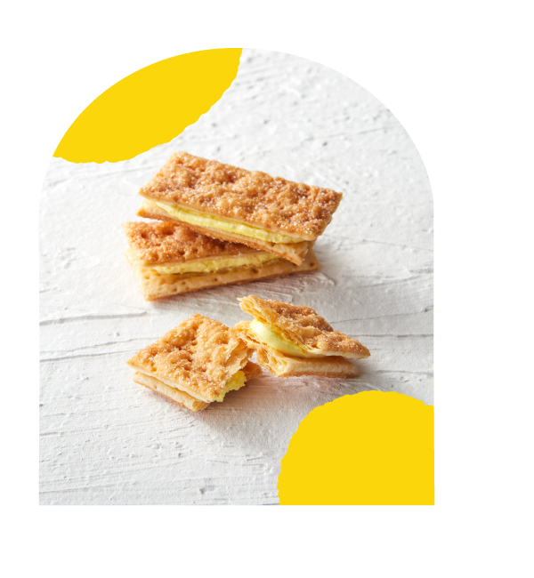
カスタード
卵のコク、すっと軽い余韻。
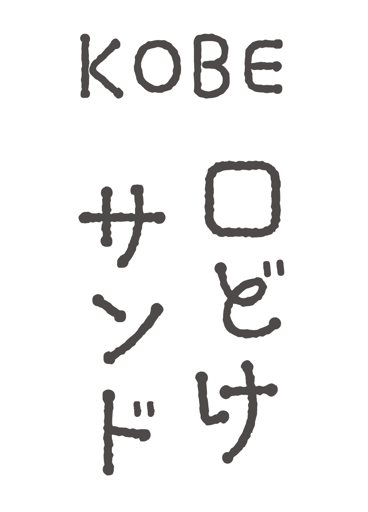
商品を見る ↗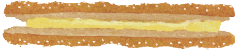
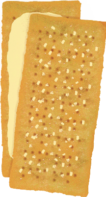
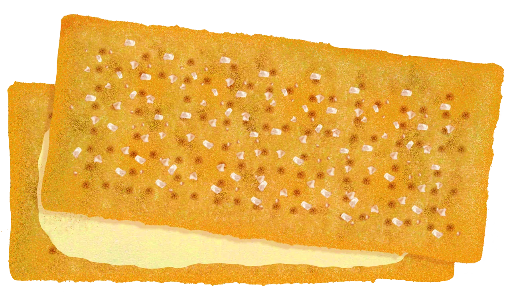
SCROLL TO DISCOVER ↓
KOBE, JAPAN · CREAM SAND PIE
A GIFT
THAT MELTS.
香ばしいパイと、なめらかなクリーム。
重なるふたつが、口の中でひとつになる。
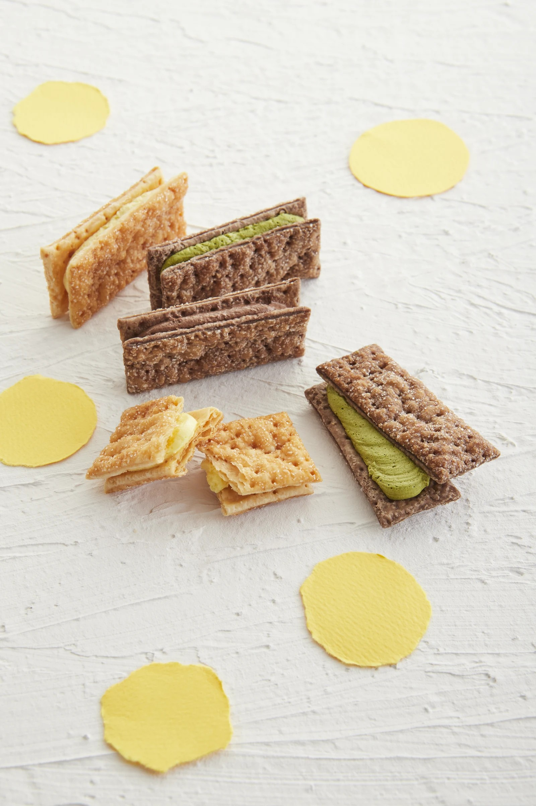
神戸から、ひとくちのしあわせ。
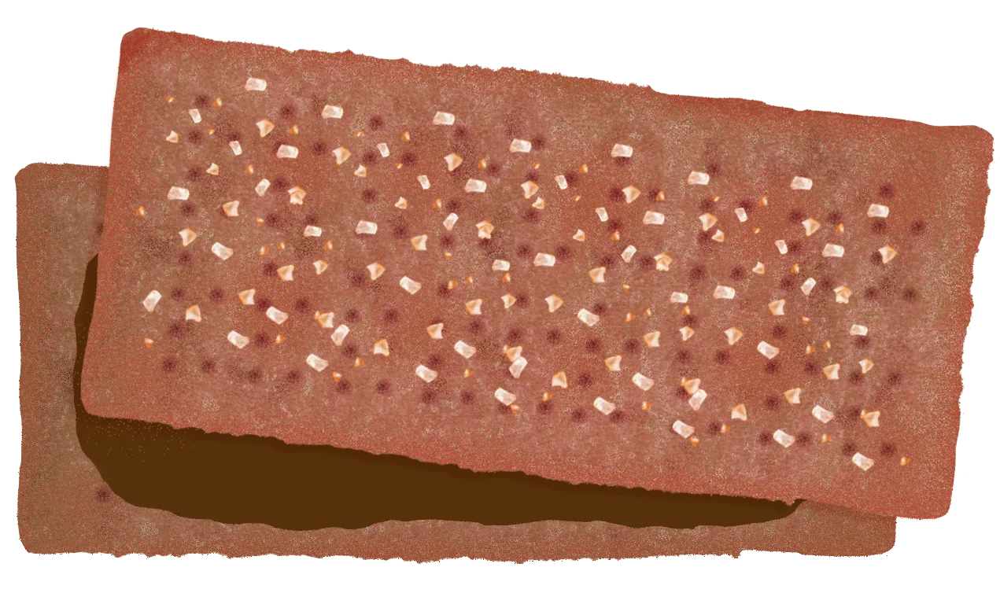
THE TEXTURE
独自にオーダーした、
口どけのためのパイシート。
ライン上で薄く伸ばしてもちぎれにくく、層をつぶさず、焼成時の浮きは穏やかに。相反する条件を両立するため、粉の配合から専用に設計しています。折り込んだ生地は2〜4℃の冷蔵庫で一日休ませ、香ばしさと軽やかな食感を整えます。
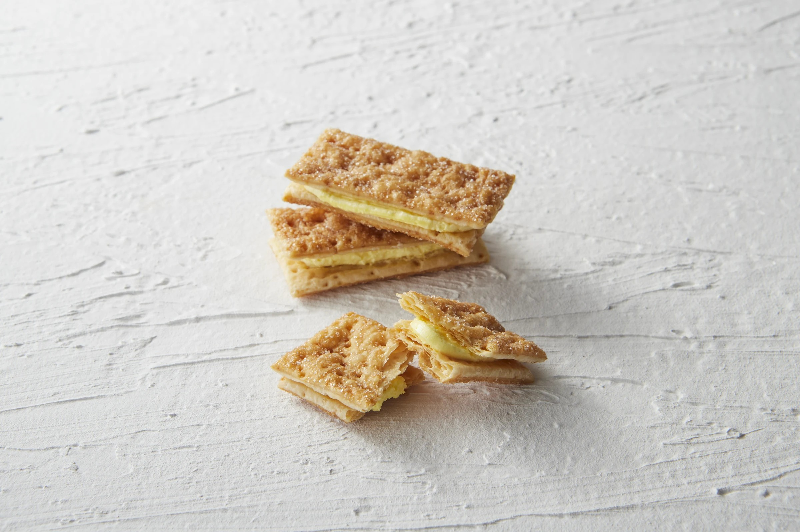
ざらめ糖香ばしく、やさしい甘さ
なめらかクリームふわっと柔らかな、なめらかさ
サクサクのパイカスタード256層／チョコ系512層
THE CREAM
クリームのふわふわ感と口どけを左右するのは、空気の含み方。最終ミキシングのたびに温度と比重を測り、毎回同じ品質になるよう細かく確認します。整えたクリームは機械で均一に絞り、どこをかじっても同じおいしさに仕立てます。
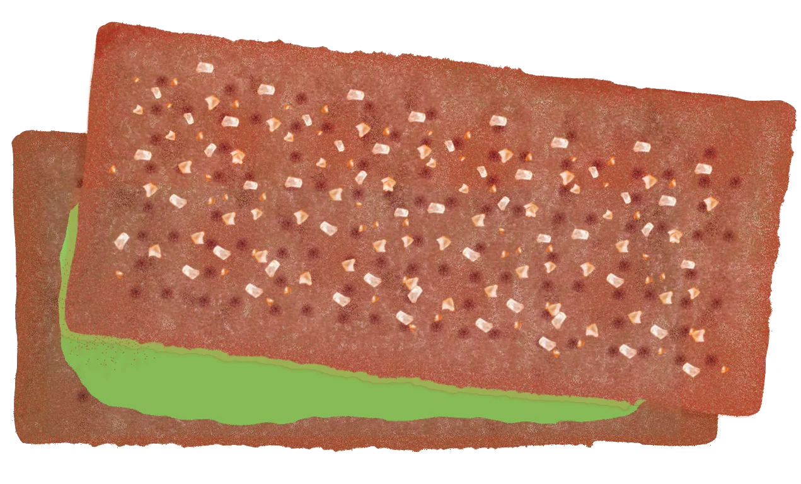
THREE FLAVORS
気分に合わせて選べる、三つの味。

卵のコク、すっと軽い余韻。
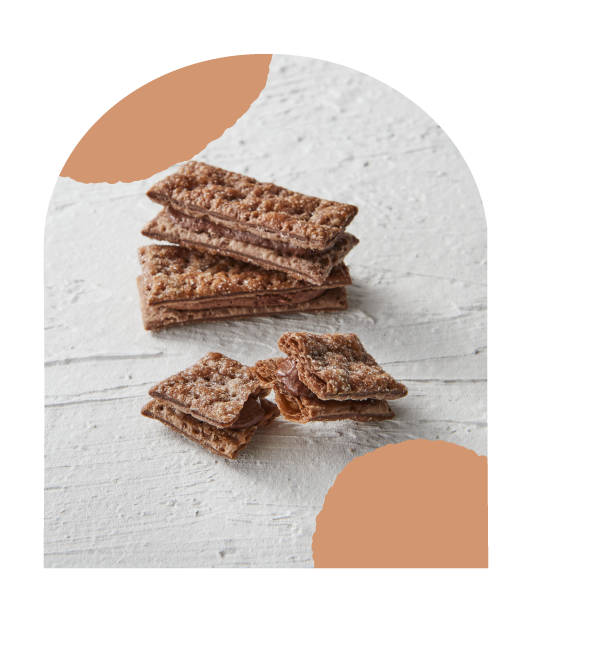
カカオの深みを、なめらかに。
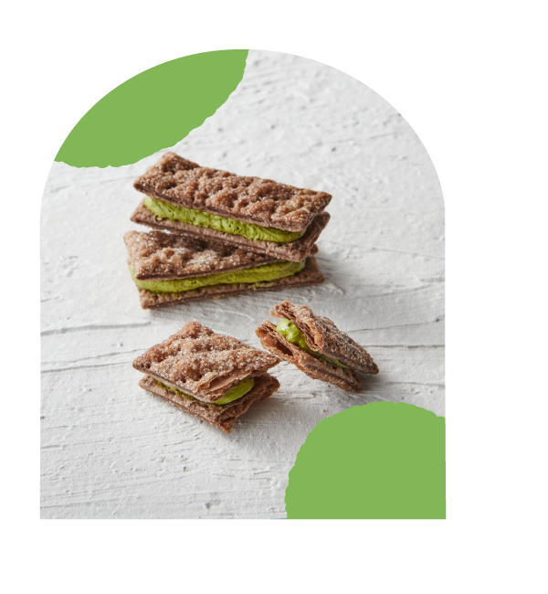
抹茶のほろ苦さと、やさしい甘さ。
MADE WITH CARE
急がず、飛ばさず、ひとつずつ。
職人の目と手でつなぐ5つの工程。
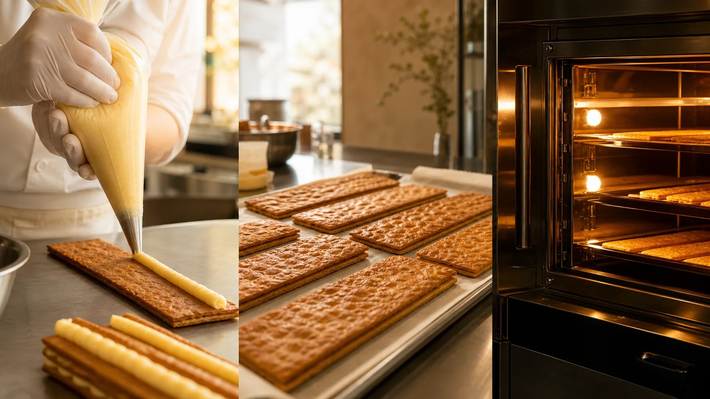
撮影写真に差し替え予定のイメージ小麦粉・水・複合材をミキサーで混ぜ、ひと玉ずつ小分けに。油脂シートを丁寧に折り込みます。
折り込んだ生地を2〜4℃の冷蔵庫で一日寝かせ、次の日の成型に備えます。
シーターで薄く伸ばしてエアーを抜き、砂糖とトレハを振ってカット。生地を落ち着かせてから香ばしく焼き上げます。
最終ミキシングごとに温度と比重を測定。ふわふわ感と口どけを揃え、機械で均一に絞ります。
パイをそっと重ねてサンドし、一つずつ個包装。軽やかな食感をそのまま包みます。
A GIFT FROM KOBE
神戸らしい軽やかさを、色鮮やかな箱に詰めました。手みやげにも、今日の自分への小さなごほうびにも。
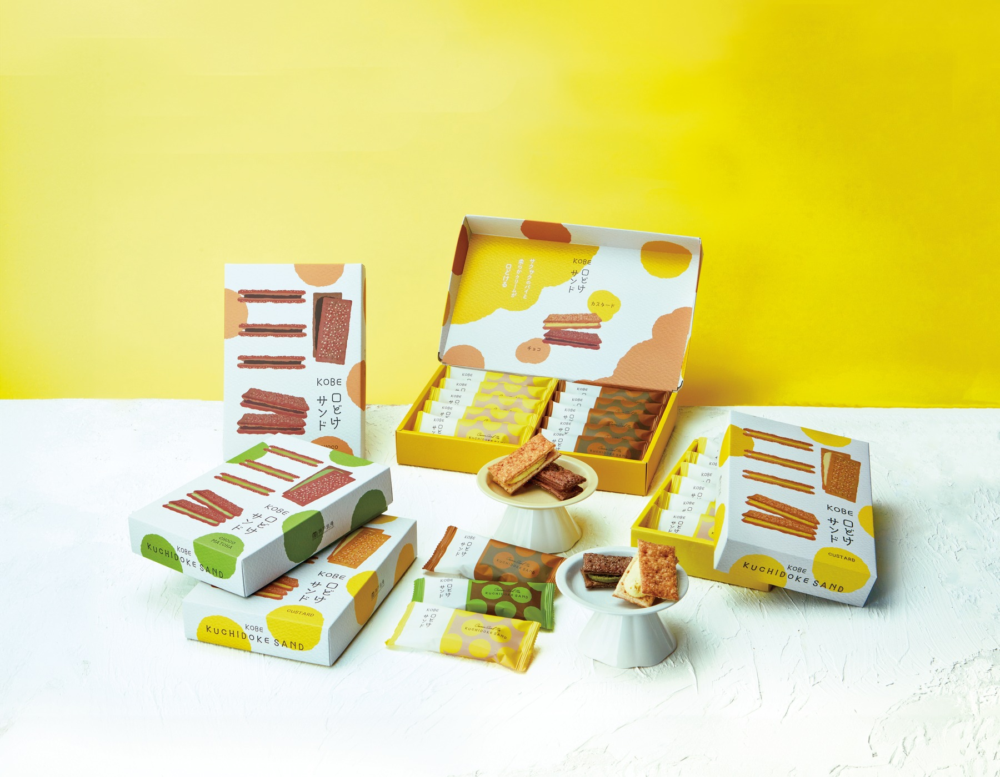